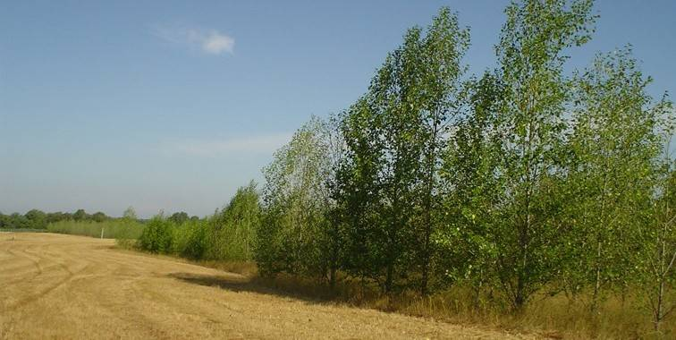

Phytoremediation
Plant-based treatment for leachate, groundwater, stormwater and impacted soil, and an honest account of where it stops being the right answer.
We installed our first phytoremediation stand in 1999 and have been the country's leading practitioner of plant-based remedies since. The idea is old; the engineering is not. A stand of hybrid poplar or willow is sized, planted and irrigated to intercept a plume, move water out of the ground, and take up, hold or break down what is dissolved in it.
Done properly it behaves like a treatment system. It has a design flow, a loading rate, an operations plan and a monitoring record. It also has failure modes, which is why the feasibility work matters more than the planting.
Phytotechnology is recognised by the U.S. EPA and has been applied at Superfund sites across the country. We have systems in more than twenty states, as a sole remedy or as one component of a multi-remedy strategy.
It is not the right instrument everywhere, and we say so in the first meeting. A stand that cannot work is an expensive way to lose two years.
How a system gets built
Site characterisation
Hydrology, geology, contaminant mass and the groundwater flux through the property. If a stand cannot intercept the water, nothing else in the design matters.
Feasibility testing
Clone selection and toxicity trials, to establish which poplar and willow varieties tolerate the contaminant and the site chemistry before anyone buys a tree.
Design, permit and plant
Planting layout, irrigation, rooting depth and loading rates, with the regulatory package. Approvals have come through in as little as a week where the design is clean.
Operate and monitor
Establishment watering, replanting, irrigation tuning, and the sampling programme that proves performance. We stay on the system for years, not seasons.
How the plants do the work
Most systems use more than one mechanism at once.
Phytosequestration
Contaminants are taken up and held in plant tissue, roots and the surrounding soil, removing them from the water pathway.
Phytovolatilization
Some compounds are taken up and released to the atmosphere in a harmless form as the tree transpires.
Phytostabilization
Root systems and ground cover hold soil in place and stop wind and water moving contaminated material off site.
Rhizodegradation
Root exudates feed a microbial community in the root zone that breaks down organic contaminants such as petroleum compounds.
Where it fits
- Shallow groundwater plumes within root reach
- Landfill leachate, in situ and ex situ
- Nutrients and pesticides in soil and water
- Stormwater and runoff with land available to plant
- Sites that need a low-energy, long-term remedy
- Closure and post-closure, where a cover has to do work
Where it does not
- Deep plumes beyond root depth
- Free product, dense solvents or acute toxicity
- Sites with no land available to plant
- Deadlines measured in months rather than seasons
- Contaminants the plants cannot take up or break down
Systems in the ground
Four projects from the record, with the numbers we measured.
 Northern Wisconsin
Northern Wisconsin
Ex-situ phytoremediation of paper mill landfill leachate
A full-scale poplar system built for the sole purpose of treating leachate from a paper mill sludge compost facility. Three acres planted, drip irrigation, no liner beneath the trees, more than thirty feet to the water table.
 North Central Wisconsin
North Central Wisconsin
Hybrid poplar landfill cover, irrigation and groundwater monitoring
A closed landfill holding paper mill waste. Pilot tree cover approved by WDNR, then deployed across most of the cover; leachate now feeds an automated irrigation system instead of being trucked to the POTW.

Northern WisconsinIn-situ phytoremediation of landfill leachate
An older, unlined municipal landfill constructed in a peat wetland, with the water table inside the waste. A full-scale poplar and willow stand controls groundwater migration and leachate concentrations.
 Iowa
Iowa
Phytoremediation of nitrate in groundwater
Long-term leakage of liquid fertiliser left ammonia and nitrate in soil and groundwater. Poplar and willow planted over the plume, and the manufacturer’s own staff trained to run the operation and maintenance.
Talk to someone who has closed a site like yours.
Send the site address and the contaminant if you know it. We will tell you what the file needs and whether a plant-based remedy fits.